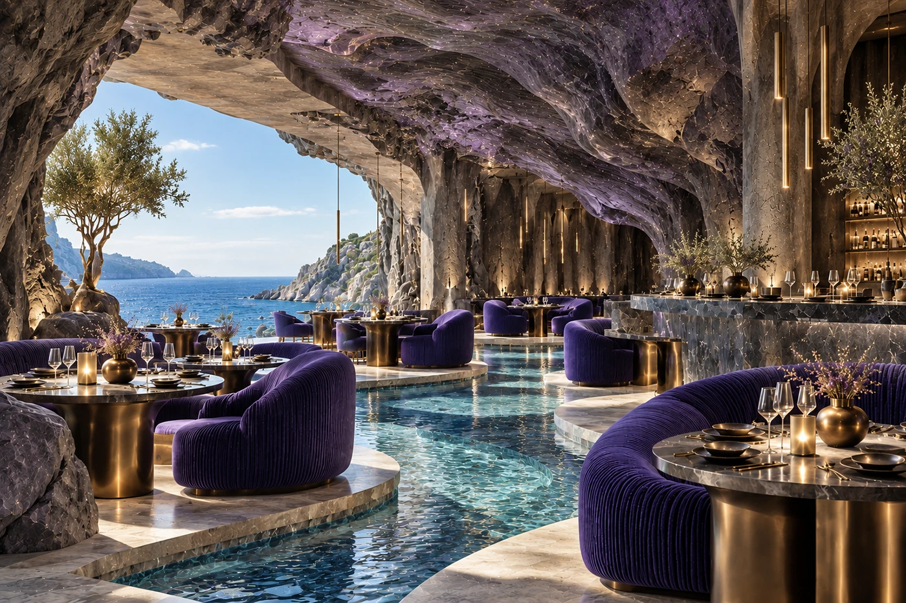

WORK TOGETHER / CONCEPT STUDIO
A clear direction.
Before the details.
Spatial concepts for hospitality. A story, an atmosphere and a guest experience brought into one creative direction.
Who I work with
For hospitality owners, founders and design teams developing a hotel, restaurant, café, spa or retreat. I help shape a distinctive concept before further design development.
When to bring me in
When you have an idea or a space, but the atmosphere, story and guest experience still need a clear direction. Or when your team needs an outside concept perspective for a new brief.
What we can develop
A central idea connected to the guest journey, mood, materials, colour and light. Depending on the brief, the agreed presentation can include a concept narrative, moodboards, key moments and concept visuals. Image count, file formats and revision rounds are agreed before work begins.
From first message to handover
Share your project, location, current stage, references and any available plans. We agree the scope, fee, timing and revisions. I develop the concept and refine the agreed direction with your feedback. You receive the agreed presentation and files as a creative direction for further development.
Where the concept stage ends
Measured plans, technical drawings, 3D modelling and walkthrough animation are separate stages. The right qualified specialists, their availability and their scope must be confirmed before any commitment.
A CONCEPT EXAMPLE
POLAR LIGHT

A sea grotto, transformed by light. One central idea connects the arrival, dining room, bar, materials and changing atmosphere.
Explore POLAR LIGHT ↗Identity, connected to the space
Brand concept and visual identity can be discussed as a separate scope: naming ideas, logo concepts, colour palettes and visual direction. Final production files are scoped separately.
Have a project in mind?
Write in English or Ukrainian. Tell me what you are creating, where the project is, its current stage and the experience you want guests to have.
Tell me about your project ↗Concept and creative decisions by Mariia Andriiuk. AI and Photoshop were used to create the POLAR LIGHT visualisation.